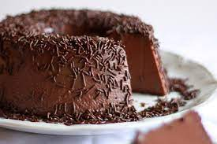

Página sobre minhas comidas favoritas
Frango Frito

Brigadeirão

Hambúrguer
Receita do brigadeirão:
Igredientes:
- 2 latas de leite condensado
- 1 lata de leite de vaca (use a lata de leite condensado como medida)
- 1 colher de manteiga
- 200 g de chocolate em pó
- 4 ovos
- açúcar suficiente para polvilhar a forma
Modo de preparo:
- Bata o leite condensado, o leite de vaca, a manteiga, o chocolate em pó e os ovos no liquidificador.
- Unte uma forma com buraco no meio e polvilhe com açúcar.
- Coloque a mistura liquidificada na forma e leve ao forno para assar em banho-maria por mais ou menos 1 hora, a 150°C.